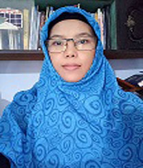

New York City Flights, Developed by :
 BadriyahPure developed using R Shiny
|
Contact Address : Master of Informatics Faculty of Science and Technology, BJ Habibie Building The State Islamic University of Maulana Malik Ibrahim Malang Jl. Gajayana 50 Malang, East Java,Indonesia Multimedia The State Vocational High School 3 Kediri Jl. Hasanudin No.10, Dandangan, Kec. Kota Kediri, Kota Kediri, Jawa Timur 64121 |